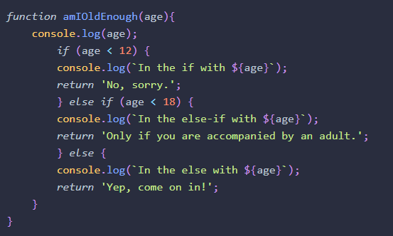

Errors and bugs are a fact of life in programming ― they will always be there.
Errors are caused when something goes wrong in a program. They are usually caused by one of the following:
System error ― there’s a problem with the system or external devices with which the program is interacting.
Programmer error ― the program contains incorrect syntax or faulty logic; it could even be as simple as a typo.
User error ― the user has entered data incorrectly, which the program is unable to handle.
An exception is an error that produces a return value that can then be used by the program to deal with the error.
An exception will also produce a stack trace. This is a sequence of functions or method calls that lead to the point where the error occurred.
A warning can occur if there’s an error in the code that isn't enough to cause the program to crash. This means the program will continue to run after a warning.
JavaScript is a fairly forgiving language when it comes to errors
Debugging is the process of finding out where bugs occur in the code and then dealing with them. In many cases, the point at which an error occurs is not always where it originated, so you’ll need to run through the program to see what’s happening at different stages of its execution.
Console Example:

I'm still confused on what the purpose of strict mode is. To me it just sounds like a tool to help format better. When is the best time to use it? Or should we use it all the time?